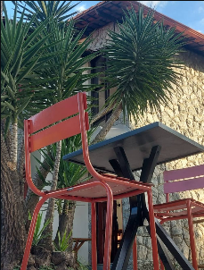
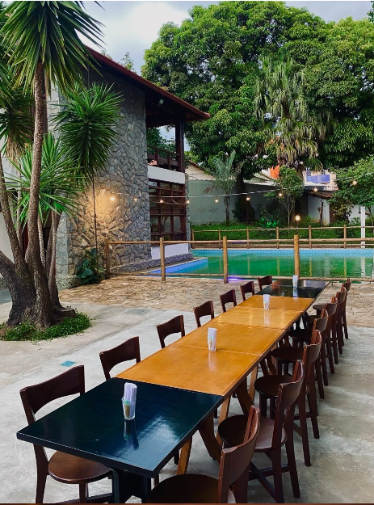
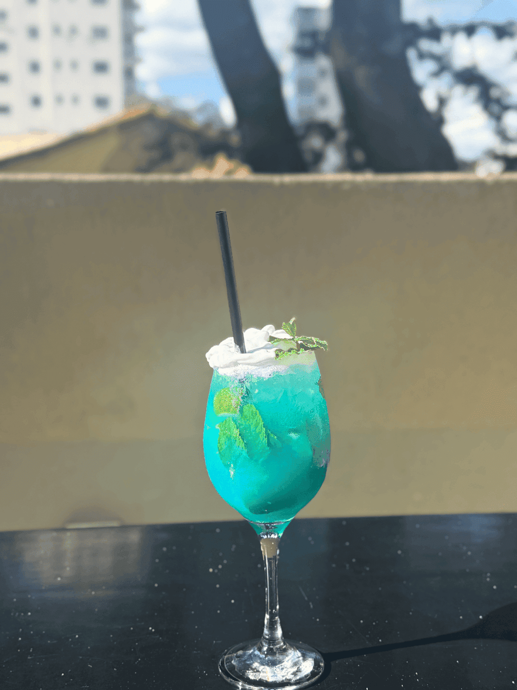

Do parabéns em família ao encontro da firma, o Kasarão se transforma para receber eventos com boa comida, clima leve e aquele cuidado que deixa tudo com cara de celebração.
Resposta pelo WhatsApp com orientação sobre data, convidados e melhor formato.
O espaço pode ganhar um clima mais íntimo, animado, profissional ou familiar. A equipe conversa com você para entender quantidade de convidados, horário, cardápio e detalhes que fazem diferença.
Parabéns com mesa bonita, brinde na mão e zero correria.
Para reunir amigos, família e aquela turma que aparece quando a noite promete. O Kasarão ajuda a criar uma celebração gostosa, com comida boa, drinks e espaço para todo mundo circular sem perder a proximidade.
Empresas
Confraternização, reunião ou encontro com cara de respiro.
Um ambiente acolhedor para equipes que querem sair do óbvio: celebrar metas, receber clientes, fazer um happy hour organizado ou fechar o ano com mais conversa e menos formalidade.

Festas infantis
Leveza para as crianças, conforto para os adultos.
Para comemorações menores e cheias de afeto, a casa pode receber famílias com uma proposta tranquila: espaço bonito, atendimento atencioso e uma experiência que acolhe gerações diferentes na mesma mesa.

Celebrações privadas
Um jantar, um noivado, uma surpresa. Tudo com jeito de casa especial.
Quando o encontro merece um cenário mais cuidadoso, o Kasarão entra como palco: iluminação, sabores, música ambiente e aquele clima de “foi pensado para nós”.
Como combinar
A conversa começa simples.
Conte a ideiaData, horário, quantidade de pessoas e o tipo de comemoração.
Ajuste o formatoA equipe alinha cardápio, uso do espaço e detalhes de atendimento.
Chegue para aproveitarNo dia, a casa entra no ritmo do seu evento.
Clima da casa
A atmosfera que o seu evento pode ter.

Bora marcar?
Fale com a equipe e desenhe seu evento com calma.
Envie a data desejada, quantidade aproximada de convidados e o tipo de celebração. A partir daí, o Kasarão ajuda a pensar o melhor formato.